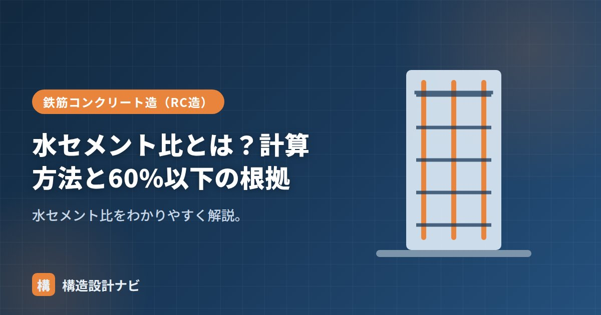

水セメント比とは？計算方法と60%以下の根拠

水セメント比（W/C）とは、コンクリート中の水とセメントの質量比のことです。コンクリートの強度と耐久性を決める最重要の値とされ、配合設計のもっとも基本となる指標です。単位水量・単位セメント量とセットで理解しておくと、コンクリートの配合の考え方全体がつかみやすくなります。
- 水セメント比W/C＝単位水量÷単位セメント量×100（%）で計算する
- 小さいほど緻密で高強度・高耐久になる（高強度コンクリートでは30〜40%）
- 耐久性確保のため一般に60〜65%以下、水密性などが必要な場合は50〜55%以下とする
計算方法
この式のとおり、水セメント比は質量の比であって体積の比ではありません。生コン工場の配合表には単位水量・単位セメント量とあわせてW/Cの値が記載されており、現場での品質管理でも重要な確認項目のひとつです。
小さいほど高強度・高耐久になる理由
水が多い（W/Cが大きい）と、硬化後に水が抜けた跡が空隙として残り、強度が下がり、すき間から劣化要因が侵入しやすくなります。逆にW/Cが小さいほど緻密で高強度・高耐久です。高強度コンクリートではW/Cを30〜40%まで下げます。
セメントの水和反応に必要な水の量には限りがあり、それ以上に加えた水は反応に使われず、コンクリートが固まる過程で蒸発したり、内部に微細な空隙として残ったりします。この空隙が多いほど、外部から水や塩分、炭酸ガスなどが浸入しやすくなり、鉄筋の腐食や中性化の進行につながります。したがって、施工に支障のない範囲でできるだけ水セメント比を小さくすることが、耐久性の確保につながります。
60%以下の根拠
耐久性（中性化・鉄筋腐食への抵抗）を確保するため、JASS5などでは計画供用期間に応じて水セメント比の上限が定められています。一般的な耐久性のためにはおおむね60〜65%以下、より長期の耐久性や水密性が必要な場合は50〜55%以下とします。「60%以下」は標準的な耐久性確保の目安です。
単位水量・単位セメント量との関係
W/Cは単位水量と単位セメント量の比です。強度・耐久性からW/Cの上限が決まり、施工性から単位水量の上限（185kg/m³）が決まると、必要なセメント量が定まります。
水セメント比を下げるために、現場で単純にセメント量だけを増やすと、水和熱が過大になったり、乾燥収縮によるひび割れが増えたりすることがあります。W/Cを下げる際は、高性能AE減水材などの混和剤を活用し、単位水量自体を抑える配合設計が基本です。
Q1. 水セメント比を勝手に現場で調整してよいですか？
いいえ。水セメント比は配合計画書に基づいて管理される値で、現場で加水するとW/Cが変わり、強度・耐久性が確保できなくなります。荷卸し後の加水は原則として認められていません。
Q2. 水セメント比が同じなら、どのセメントを使っても強度は同じですか？
いいえ。同じW/Cでも、使用するセメントの種類（普通ポルトランド・高炉セメントなど）によって強度発現の速さや耐久性の傾向が異なります。W/Cはあくまで配合上の目安であり、セメントの特性も踏まえて設計します。
現場で生コン車の荷卸しに立ち会うと、スランプを合わせるために加水したいという相談を受けることがあります。水セメント比が崩れると強度も耐久性も設計値から外れるため、その場での加水は認めず、配合計画書どおりの管理を徹底しています。
計画供用期間ごとのW/C上限
水セメント比の上限は、その建物を何年使う想定かによって変わります。長く使うほど厳しい値が求められます。
| 計画供用期間の級 | おおよその年数 | W/Cの上限（普通コンクリート） |
|---|---|---|
| 短期 | 約30年 | 65%以下 |
| 標準 | 約65年 | 65%以下 |
| 長期 | 約100年 | 55%以下 |
| 超長期 | 約200年 | 50%以下 |
※JASS5に基づく代表値。使用するセメントの種類によっても変わります。
この表が示すのは、W/Cが耐久性を直接支配しているという事実です。長く使う建物ほど、中性化・塩害・凍害の進行を遅らせる必要があり、そのために組織を緻密にする＝W/Cを下げるという対応をとります。強度だけを見れば65%でFc24を確保できる場合もありますが、100年もたせるなら55%以下にする、という考え方です。
W/Cと中性化速度の関係
鉄筋の腐食を防ぐには、「中性化を遅くする（W/Cを下げる）」と「鉄筋を深く埋める（かぶりを厚くする）」の2つの手段があります。どちらか一方ではなく、両方を適切に組み合わせることが耐久設計の基本です。JASS5でも、計画供用期間に応じてW/Cの上限とかぶり厚さの最小値がセットで規定されています。
よくある質問
Q1. 水セメント比と水結合材比は違うのですか？
違います。混和材（高炉スラグ微粉末・フライアッシュなど）を使う場合、水セメント比はセメントのみを分母としますが、水結合材比（W/B）はセメントと混和材の合計を分母とします。混合セメントや混和材を使う配合では、強度・耐久性の評価に水結合材比を用いるのが適切とされ、仕様書でどちらを指定しているか確認が必要です。
Q2. W/Cを50%以下にすると何が変わりますか？
耐久性が大きく向上します。組織が緻密になり、中性化・塩化物イオンの浸透・凍害に対する抵抗性が高まります。水密コンクリートでW/C50%以下が求められるのはこのためです。一方で単位セメント量が増えるため、水和熱・乾燥収縮・コストが増加します。また流動性の確保に減水剤が必須になります。
Q3. 現場で加水されるとW/Cはどれだけ変わりますか？
わずかな加水でも大きく変わります。W＝175kg/m³、C＝350kg/m³（W/C＝50%）の配合に、1m³あたり10kgの水を加えると、W/Cは（175＋10）÷350＝52.9%に上がります。約3ポイントの上昇で、圧縮強度はおおむね2〜3N/mm²低下する計算になります。生コン車1台（4.5m³）にバケツ数杯の加水でこの影響が出るため、加水は厳禁とされています。
まとめ
- 水セメント比W/C＝単位水量÷単位セメント量×100（%）。
- 小さいほど緻密で高強度・高耐久。高強度では30〜40%。
- 耐久性確保のため一般に60〜65%以下、水密などは50〜55%以下とする。
- W/Cを下げるには単位水量を抑える配合設計が基本で、現場での加水は厳禁。